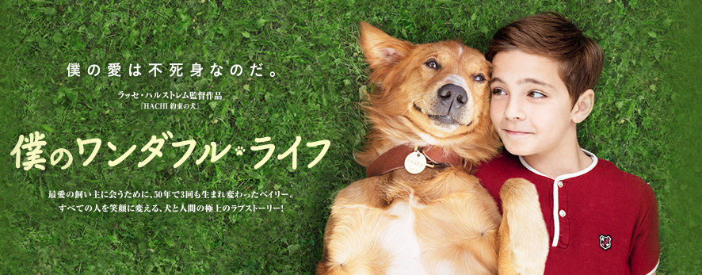

好きな映画
映画

アニメは『名探偵コナン』です。4月に最新作の映画を鑑賞しました。普段は家で洋画映画を観ることが多いです。字幕・吹き替えどちらも良さがあり大好きです。鑑賞する際は推し俳優や声優さん次第で切り替えています(・ω・)。✧♡
個人的の話ですが...動物・犬好きな方には『僕のワンダフル・ライフ』が本当に一押し映画です。最終的にハッピーエンドなのでご安心をッ！もし全部観る時間がなくても最後のシーンだけでも絶対に観てほしいぐらい感動します！